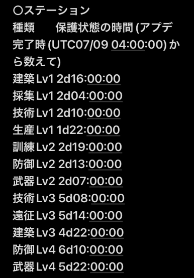

https://discord.com/channels/973157270554804264/1263349407395483729
https://x.com/WOS_Japan/status/1808089006011568385
合併後ランダム移転し、24時間のシールドが張られる
同盟領地のボーナスは無効になり、すべての領地建物は回収される(建設に使用されたすべての資源は同盟倉庫に返還される)
合併後、同盟本部を建設する必要はない(ラッパやマスター像と同じで、そのまま設置できる)
同盟旗は
砦争奪イベントが開始されると争奪できる
合併が火曜日の昼で、その週の金曜日に開始
サーバーのアクティブさと進行度が合併に考慮される主な要素(総力ではない)
合併相手は隣国のサーバーに限らない 3つ以上で合併する可能性もある
王国進行度と火晶、英雄の世代が同じ王国とのみ合併される
合併直後、各工程ステーションは未占領の状態になり、保護状態終了後に争奪可能になる

合併の前の週に、プレイヤーに告知される 兵士募集所と軍医所は影響なし
座標のラベルはリセット 移民授権所が10枚もらえる
メンテナンスが火曜日の11:00～13:00で、その期間に合併される
合併後、最初の週の土曜日に王城決戦
王国MAPの広さ並びに砦・要塞及び工程ステーションの位置は既存の王国と同じ
同盟ログと同盟通知、同盟投票は合併前の分も削除されない
同盟チャットや個人チャットは合併前の会話も削除されない
グループチャットについては未確認
リセット
合併の翌週に開催
合併前に参加資格があれば合併後も参加可能
その次からは王国の総力ランキング20位以内の同盟が参加可能
リセット
パスを購入済み: すべてもらえる 未購入: 達成済みのみもらえる
同盟略称が重複した場合リセットされる
同盟名が重複した場合、王国番号が同盟名の前に付加される(移民のときと同じやつ？)
領主名が重複した場合、王国番号が領主名の前に付加される(移民のときと同じやつ？)
合併後、特別なマイルストーンイベントがある
合併直後の土曜日に国内太陽城、そのあとSvSっていうパターンだと思うから中でまとまるの早いところが勝ちそう(参照)